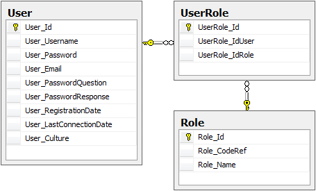
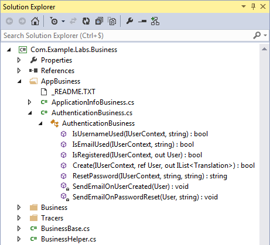

The deployed solution comes with User Authentication Support by default (the following schema can be extended to meet application needs).
Some business methods are available and exposed on client-side through WCF.
The configuration can be found in the project Com.Example.Labs.config configuration file.
// Com.Example.Labs.config <# ... "Config.AuthenticationSupport.UserTableName" : "User" // Do not change it "Config.AuthenticationSupport.UserTableIdentifiedColumnName" : "User_Username" // Could be User_Email ... #>
This example shows how to authenticate an user.
// Tests namespace Com.Example.Labs.Tests { using System; using System.Diagnostics; using Microsoft.VisualStudio.TestTools.UnitTesting; using Com.Example.Labs.Contracts; using Com.Example.Labs.Core; using Com.Example.Labs.Models; [TestClass] public class AuthenticationTests { [TestMethod] public void _IsRegisteredTest() { IUserContext userContext = new ClientContext("john@doe.com", "jdoe1970"); using (var service = new ServiceProxy<IAuthenticationService>()) { User user; bool isRegistered = service.Proxy.IsRegistered(userContext, out user); if (isRegistered) { // user instance contains John Doe information. Debug.WriteLine("{0} is authenticated (registration date = {1})", userContext.Identifier, user.RegistrationDate.ToShortDateString()); } } } } }
It is possible to secure a WCF operation (and only WCF operations) with Role(s) using the OperationSecurity attribute on the Business method.
// Business | UserBusiness.custom.cs namespace Com.Example.Labs.Business { using System; using System.Collections.Generic; using LayerCake.Generator.Business; using LayerCake.Generator.Core; using LayerCake.Generator.Crud; using LayerCake.Generator.Models; [BusinessClass] public class UserBusiness : BusinessBase { [BusinessMethod] [OperationSecurity("Admin", "Staff")] public void CloseUserAccount(IUserContext userContext, long id) { // Only authenticated user with Admin or Staff role can execute this method... } [BusinessMethod] [OperationSecurity("Admin")] public void DeleteUserAccount(IUserContext userContext, long id) { // Only authenticated user with Admin role can execute this method... } } }
Once LayerCake Generator is executed these attributes are also set to the Service methods.
// Service | UserService.generated.cs [OperationSecurity("Admin", "Staff")] public void CloseUserAccount(LayerCake.Generator.Core.IUserContext userContext, long id) { UserBusiness userBusiness = new UserBusiness(); userBusiness.CloseUserAccount(userContext, id); } [OperationSecurity("Admin")] public void DeleteUserAccount(LayerCake.Generator.Core.IUserContext userContext, long id) { UserBusiness userBusiness = new UserBusiness(); userBusiness.DeleteUserAccount(userContext, id); }
Exception when the user is not authenticated.
An exception of type 'System.Security.SecurityException' occurred in Com.Example.Labs.WebServices.dll but was not handled in user code
Additional information: To execute the 'Com.Example.Labs.Services.UserService.CloseUserAccount' operation the user 'UserNotRegistered' must be authenticated
Exception when the user is not allowed to execute the operation.
An exception of type 'System.Security.SecurityException' occurred in Com.Example.Labs.WebServices.dll but was not handled in user code
Additional information: To execute the 'Com.Example.Labs.Services.UserService.CloseUserAccount' operation the user 'UserRegistered' must have at least one on the following roles: 'Admin, Staff'